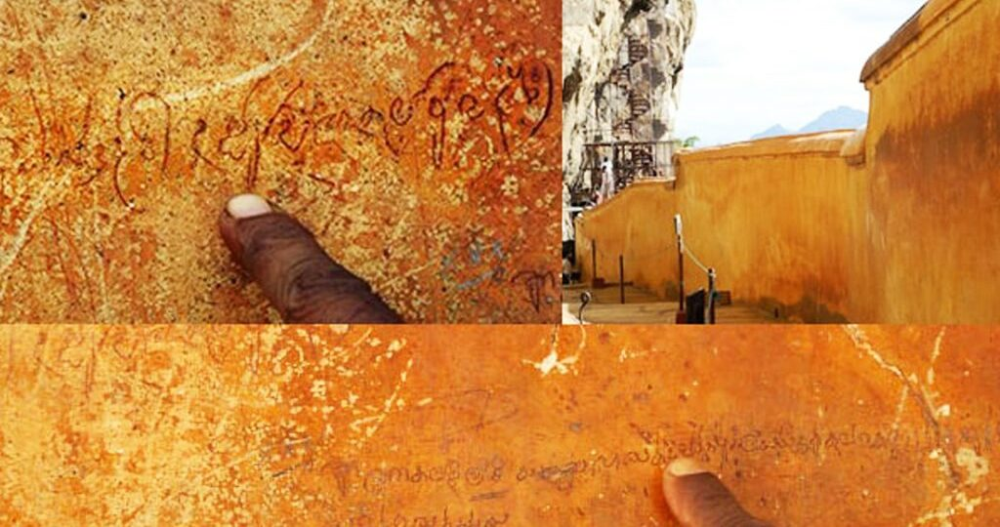

Sigiriya isn’t just an ancient rock fortress — it’s a symbol of mystery, ambition, betrayal, and even romance. Over the centuries, stories passed down through generations have made Sigiriya a place of legends. While historical records reveal much, what lies between fact and folklore makes Sigiriya truly magical.
At the summit of Sigiriya lies a flattened rock where King Kashyapa's throne is believed to have stood. According to legend, this was not just any throne — it symbolized his dominance over both men and gods. The entire palace was centered around this majestic lion-shaped gateway that once led to the very heart of his kingdom.
Many legends describe Sigiriya not just as a fortress but also as a **"pleasure palace"**. Kashyapa, portrayed in some tales as a playboy king, is said to have filled his palace with music, dancers, fountains, and art. The famous frescoes of celestial maidens are believed to depict his harem or divine courtiers.
One of the most romantic legends comes from the Mirror Wall. Visitors who came to Sigiriya centuries ago carved poems and love notes into the highly polished wall — some expressing admiration for the king, others for the women in the frescoes. These inscriptions offer rare insight into ancient emotions and culture.
Some believe Sigiriya was never meant to be a fortress or palace. Instead, they say it was a **spiritual retreat** or a **symbolic cosmic mountain**, designed according to Buddhist cosmology. Others say it was built by King Dhatusena, and Kashyapa only continued his father's vision.
Even today, new theories and mysteries continue to emerge about Sigiriya, making it not just a UNESCO World Heritage site, but a living legend of Sri Lanka’s past.